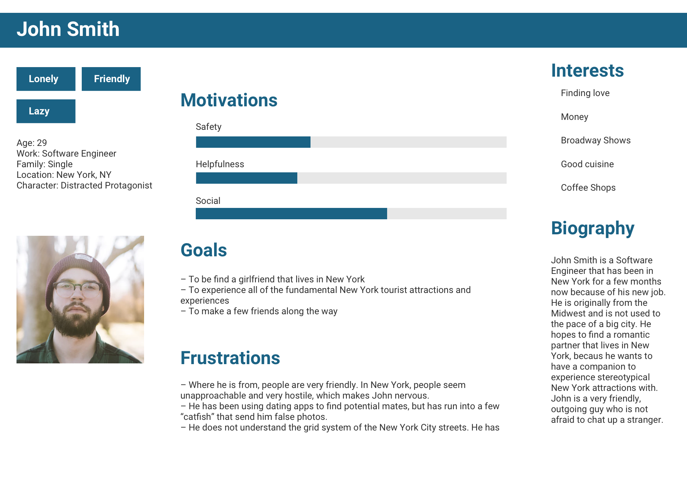

<!DOCTYPE html lang="en">
<html>
    <head>
        <title> casey tin </title>
        <meta name="viewport" content="width=device-width, initial-scale=1">
        <!-- stylesheet imports -->
        <link href="../css/styles.css" type="text/css" rel="stylesheet"/>
        <link href="../css/html5reset.css" type="text/css" rel="stylesheet"/>
        <!-- font imports -->
        <link href="https://fonts.googleapis.com/css?family=Karla&display=swap" rel="stylesheet">
        <link href="https://fonts.googleapis.com/css?family=Raleway:200&display=swap" rel="stylesheet">
    </head>
</html>
<body>
    <a class="skip" href="#skip">Skip to Main Content</a>
    <header>
        <nav>
            <a href="../index.html"></a>
            <ul class="nav-links">
                <li class="nav-item"><a href="../index.html">work</a></li>
                <li class="nav-item"><a href="../pages/play.html">play</a></li>
                <li class="nav-item"><a href="../pages/about.html">about</a></li>
                <li class="nav-item"><a href="../pages/resume.html">resume</a></li>
            </ul>
        </nav>
    </header>

    <main id="skip">
        <div class="parallax"></div>
        <div class="content">
            <div class="project-header">
                <h1>roots</h1>
                <h2>Exploring safely, without boundaries</h2>
            </div>

            <div class="project-content">
                <!-- group overview, contributions, timeline into flexbox? -->
                <h2>OVERVIEW</h2>
                <p>This project was created for my <a href="#">Digital Product Design</a> 
                    class, and iterated upon and user tested following the completion 
                    of this course. I chose to create this product as a mobile app for 
                    easy, on-the-go access that can use your real-time location to keep 
                    you safe.
                </p>
                <p><b>What is Roots?</b></p>
                <p>Roots is a crowdmapping tool, meant to allow users to find the safest
                    route when they are walking through foreign or unfamiliar streets. Users
                    also have the ability to access resources in the case of an emergency, 
                    to reduce the amount of potential danger that they face when traveling.
                </p>

                <h2>TIMELINE</h2>
                <p>January 2019 - March 2019</p>

                <h2>CONTRIBUTIONS</h2>
                <p>I worked on visual and product design, product ideation and thinking, 
                    and user research for this project.
                </p>

                <h2>PROBLEM STATEMENT</h2>
                <p>When coming up with ideas for this project, I thought about problems 
                    that my peers and I face on a regular basis, that cannot be solved 
                    by an already existing product. I thought back to my study abroad 
                    experience of Summer 2018, specifically in one instance where my 
                    friends and I were out for the night and were in a mildly unsafe 
                    area - we were followed not once, but twice, when we attempted to 
                    go back to our hostel. Luckily nothing dangerous happened, but the 
                    potential for something to happen was intensified in the moment. 
                    This tends to happen to many other travelers as well, and I wanted 
                    to come up with a creative way to combat this issue.

                    The problem statement for this project is as follows: <b>
                    “Tourists want an easy way to find the safest route when they 
                    are walking through foreign streets, so that they can reduce the 
                    amount of potential danger.”</b>  
                </p>

                <h2>GOALS</h2>
                <p>The primary goal for this app is to <b>provide a friendly interface 
                    for users to navigate foreign areas, and remove fear of danger</b>. 
                    Users should also have access to emergency resources to <b>mitigate 
                    the potential for danger</b> in any situation.
                </p>

                <h2>IDENTIFYING USE CASES AND EMPATHY MAPPING</h2>
                <p>To get a better sense of potential users for Roots, I created three 
                    different user personas based off of both personal experiences and 
                    experiences from my peers.

                    
                    <br />
                    
                    <br />
                    Though my focus was on understanding primary users on a deeper level,
                     I created personas for secondary users that might have use cases 
                     for this app, but not as heavily as the primary user above would.
                     <br />
                     
                     <figcaption>Persona #2: Secondary User</figcaption>
                     <br />
                     
                     <figcaption>Persona #3: Tertiary User</figcaption>
                     <br/>

                     This captures the essence of my target audience of people who are new 
                     to an area, whether they are sightseeing or settling down in a new of 
                     residence. These are typically people of the young adult demographic from 
                     ages 19-27, as they are in at the point in their lives where they are 
                     either settling down or traveling a lot. Users of this app are meant 
                     to feel safer and more at ease when traveling in a foreign area. This 
                     especially applies to traveling at night when public foot traffic 
                     decreases and the general higher likelihood of violent activity 
                     occurring at night. In addition, if a user is in need of emergency 
                     services and basic traveling information, they should be able to 
                     access it easily.
                </p>

                <h2>DESIGN SOLUTIONS</h2>
                <p>After defining a problem statement and goals for this product, I came up with 
                    some ideas that focused on creating something visually enticing and cohesive:
                    <ul>
                        <li>
                            Heavy focus on word choice and color palette, to ensure a feeling of safety 
                            and trust throughout the app. Word choice is meant to put the user at ease, 
                            with a color palette intended to provide a friendly vibe.
                        </li>
                        <li>
                            System transparency along with attention to accessibility that align with 
                            the goals of this product and allow users of all demographics to use this product 
                            with minimal usability issues, if any.
                        </li>
                        <li>
                            Ability to save commonly taken routes, to reduce redundancies, uphold user 
                            retention rates, and allow users to access the product without internet dependency.        
                        </li>
                    </ul>
                </p>

                <h2>INITIAL IDEATIONS & WIREFRAMES</h2>
                <p>
                    The visual design of this product played a large role in how I wanted to shape the
                     user experience. The colors I chose were inspired from sunsets, since they are an 
                     indicator of when the day ends and night starts. This app is meant to be used 
                     primarily during the night time, as it’s more difficult to recognize street 
                     structures and foot traffic is significantly decreased, creating a feeling of 
                     fear and uncertainty. I chose a neutral font to balance the friendly color palette.

                     
                     

                     I wanted to draw the main crowd-mapping functionality of this app from Google Maps, 
                     making this a more familiar product for users. Users should be able to search locations 
                     as they would on a GPS/mapping tools, but the generated route would incorporate the 
                     crowd-mapping aspect. This was a distinguishing factor of this product from other 
                     GPS/mapping tools. <br /> Other functions that seemed appropriate to include, in 
                     order to maximize the value and trustworthiness of this product, are “Saved Routes” 
                     and “Resources”. “Saved Routes” would reduce the amount of on-boarding for returning 
                     users and create a sense of personalization, where “Resources” emphasizes the feeling 
                     of security that this app is aiming to provide. In times of crisis, users will have 
                     access to the necessary information as a safety measure.

                </p>

            </div>
        </div>
    </main>

</body>